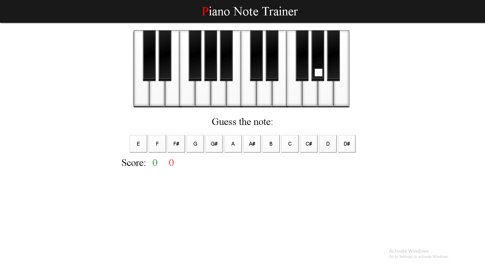

Zdravo! Ja sam Pavle. Gitarista sa preko 18 godina iskustva u učenju drugih ljudi sviranja gitare.
Sviram gitaru već 20 godina i tokom tog vremena stekao sam ne samo bogato iskustvo, već i strast prema muzici koju želim da podelim s vama. Osim što uživam u sviranju, dajem lekcije svima koji su zainteresovani za svet gitare, bez obzira na njihov nivo iskustva.
Na mom YouTube kanalu možete pronaći raznovrsne tutorijale, vodiče i savete koji će vam pomoći da postanete bolji gitarista. Učenje sviranja gitare može biti izazovno, ali uz pravog mentora, taj put postaje mnogo lakši.
Nadam se da ćete pronaći inspiraciju i korisne resurse na mom sajtu kako biste unapredili svoje veštine na gitari. Slobodno istražite lekcije, video materijale i druge sadržaje koje sam pripremio za vas.
Hvala što ste tu i što delite moju strast prema muzici. Ako imate bilo kakva pitanja ili zahtev za lekcijama, slobodno me kontaktirajte. Radujem se što ćemo zajedno putovati kroz svet muzike
Napravio sam metodu i web aplikacije koje će vam postaviti temelje i učiti vas da postanete sjajan gitarista!
Mapa učenja
Godina 1
- Lekcija 1 ( D, A, E, vežba za promenu akorda ( 60 sekundi ), osnove ritma, osnovne vežbe za sluh, plan vežbanja )
- Lekcija 2 ( G, C, vežba za promenu akorda ( 60 sekundi ), imena žica, osnovne vežbe za tehniku, vežbe za sluh, plan vežbanja )
- Lekcija 3 (Am, Em, Dm, vežba za promenu akorda ( 60 sekundi ), metronom, osnove ritma 2, vežbe za sluh, lake pesme sa novim akordima)
- Lekcija 4 ( tonovi u muzici, šest tonova koje moraš da zapamtiš na petoj i šestoj žici (dve najdeblje), oktave, dužina nota, plan vežbanja )
- Lekcija 5 ( G7 dominanta, C7 dominanta, B7 dominanta, Fmaj7, vežba za promenu akorda ( 60 sekundi ), osnove ritma 3, vežbe za sluh, lake pesme sa novim akordima, plan vežbanja )
- Lekcija 6 ( A7 dominanta, D7 dominanta, E7 dominanta, vežba za promenu akorda ( 60 sekundi ), osnove ritma 4 (Shuffle ritam i tripleti), 12 bar(taktova) blues, lake pesme sa novim akordima, vežbe za sluh, plan vežbanja )
- Lekcija 7 ( Fmaj/dur akord, razlaganje akorda, vežba za promenu akorda ( 60 sekundi ), osnove ritma 5, vežbe za sluh, lake pesme sa novim akordima, plan vežbanja )
- Lekcija 8 ( power akordi 1, sus akordi u otvorenoj poziciji, osnove ritma 6, minor/mol pentatonika, vežbe za sluh, lake pesme sa novim akordima, plan vežbanja)
- Lekcija 9 ( 12 Bar (12 Taktova) blues varijacije, osnove sviranja sa prstima umesto trzalice, vežbe za minor/mol pentatoniku, power akordi 2, vežbe za sluh sa power akordima, lake pesme sa novim akordima, plan vežbanja )
- Lekcija 10 ( palm mutovanje, osnove sviranje prstima umesto trzalice 2, 12 bar/taktova blues varijacije, minor/mol pentatonika melodijske fraze, uvod u improvizaciju, vežbe za sluh, lake pesme, plan vežbanja )
Knjiga u kojoj se nalaze lekcije:
Lekcije za gitaru - Nivo 1
Moja knjiga "Lekcije za gitaru - Nivo 1" je savršen početak za sve koji žele da nauče svirati gitaru. Ova knjiga je specijalno dizajnirana za početnike i pruža temeljno razumevanje osnovnih akorda, tehnika sviranja i melodija. Bez obzira da li ste potpuni početnik ili već imate neko iskustvo, ova knjiga će vam pomoći da razvijete svoje veštine i uživate u sviranju gitare.
Cena je 9.99$
Web aplikacije
(Klik ili touch na slici da se otvori aplikacija)Naucite i uvezbajte note uz ovu

Naucite i uvezbajte tonove na vratu uz ovu web aplikaciju

Naucite i uvezbajte tonove na klaviru
Godina 2 i godina 3
- Akordi (bare akorde, m7, maj7, dom7, diminished7) u svim pozicijama vrata
- Skale (bluz, harmonijski mol, celostepena)
- Ritmovi (ciganski džez, brazilska bossa nova...)
- Tehnike (vibrato, bending, sweep picking, legato, alternate picking)
- Teorija (intervali, gradjenje akorda, akordi u skali)
Lekcije za gitaru - Nivo 2
Za one koji su već savladali osnove sviranja gitare, predstavljam "Lekcije za gitaru - Nivo 2". Ova knjiga je namenjena naprednim gitaristima koji žele da podignu svoje veštine na viši nivo. U njoj ćete pronaći izazovnije akorde, kompleksnije tehnike sviranja i fascinantne melodije koje će vas inspirisati da postanete virtuoz gitare. Ovo je korak dalje u vašem muzičkom putovanju!
Cena je 9.99$
Youtube Lekcije Koje Idu Uz Knjige
GODINE 3+
KLIKNITE NA YOUTUBE DUGME DA VIDITE SVE LEKCIJE:
NEKE OD LEKCIJA
NAJBOLJA VEZBA ZA RAZVIJANJE BRZINU PRSTIJU
NAJBOLJA VEZBA ZA NEZAVISNOST PRSTIJU
VEZBAJMO ZAJEDNO GITARU:
Započnite svoje putovanje samnom!
Bez obzira na vaš nivo veštine, moje knjige za gitaru su savršen resurs za sve ljubitelje gitare. Sada je pravo vreme da započnete ili unapredite svoje sviračke veštine. Nabavite oba nivoa knjiga i krenite na putovanje ka majstorstvu u sviranju gitare!